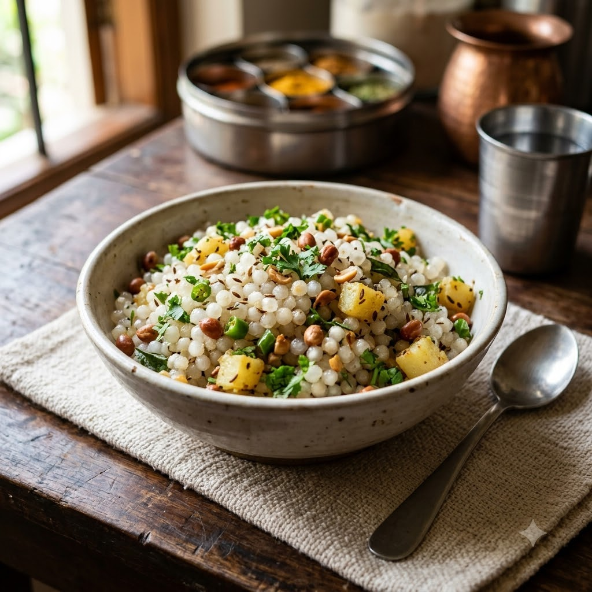

Sabudana Khichdi

Sabudana Khichdi
Chef Magic – Sauté Auto 16 min — Serves 3
Gluten-Free • Vegetarian • Maharashtrian
🧑🍳 Chef Magic🍽 Serves 3
Prep ahead: Soak sabudana (tapioca pearls) in just enough water to cover for 4–6 hours or overnight until soft and separate.
Ingredients
- 2 cups sabudana, soaked
- 1/2 cup roasted peanuts, coarsely crushed
- 1 potato, diced
- 1 tsp cumin seeds (jeera)
- 2 green chillies (hari mirch), chopped
- 2 tbsp ghee
- Salt to taste
- 1 tbsp lemon juice
- Chopped coriander (dhania)
Method
1Add ghee and cumin seeds to the jar; select Sauté (Speed 2–4, ~130–160°C) until fragrant.
2Add the diced potato and green chillies; sauté for 5 minutes until potato softens.
3Add the soaked sabudana, crushed peanuts and salt; sauté gently for 8 minutes, stirring often, until translucent.
4Finish with lemon juice and coriander before serving.
Tip: Sabudana turns gluey if over-soaked — it should be soft but still separate, not mushy, before cooking.